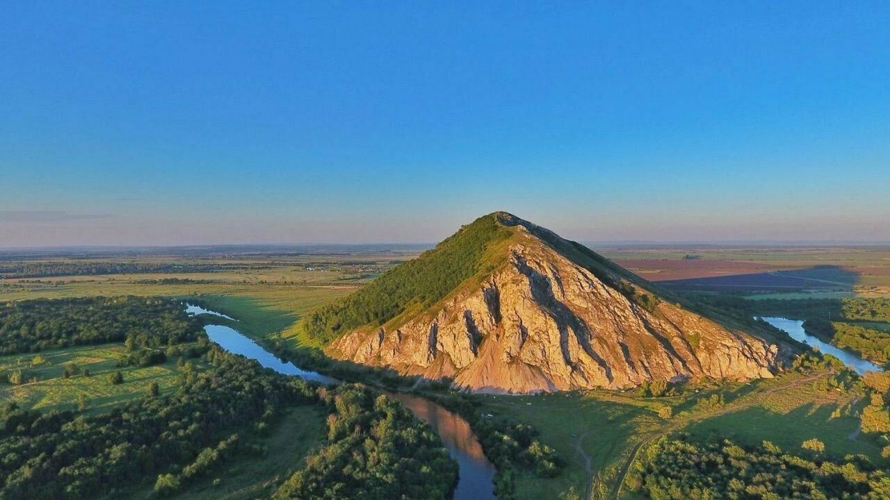
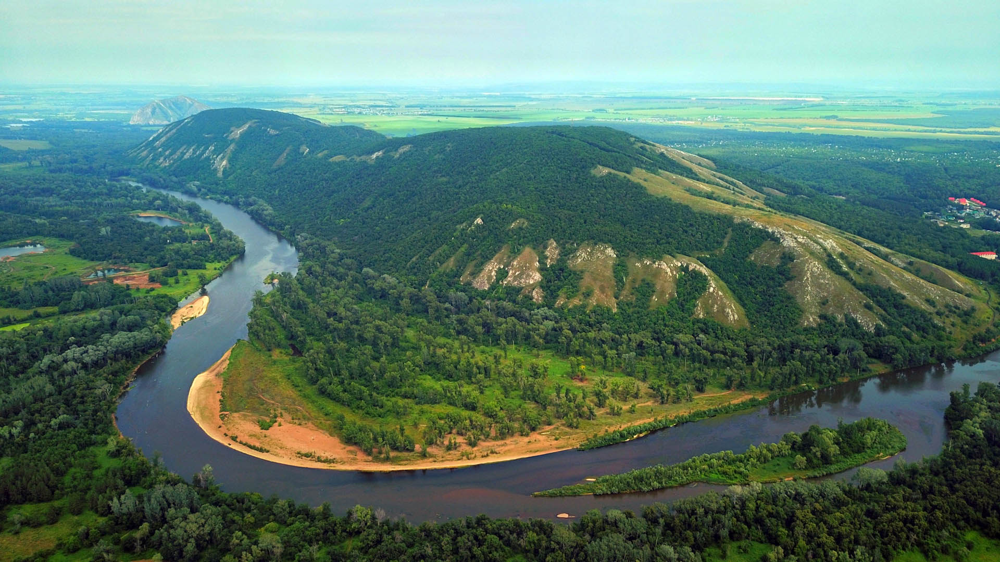
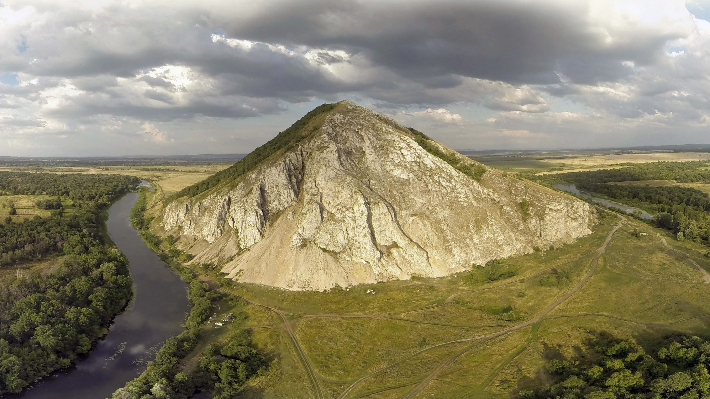
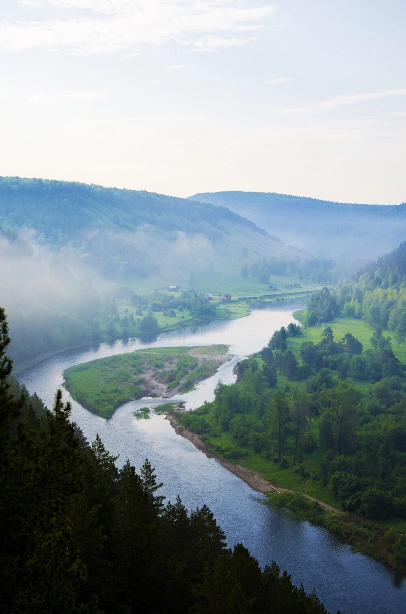
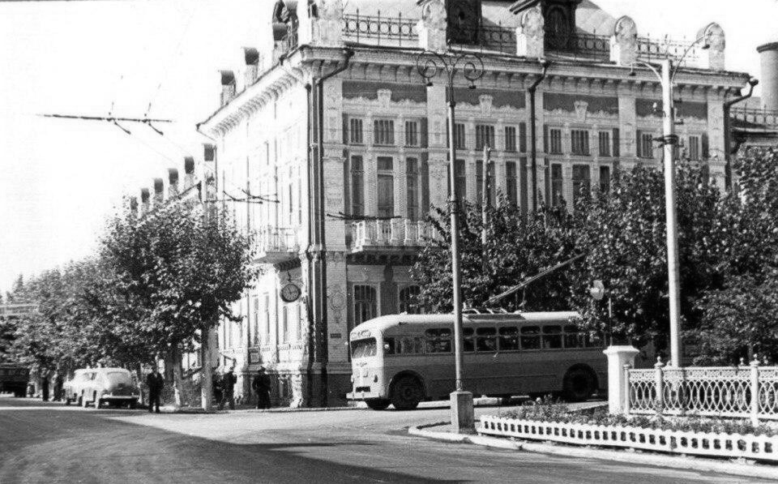
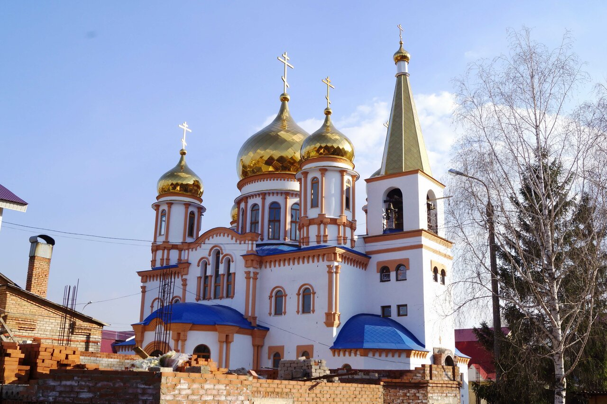
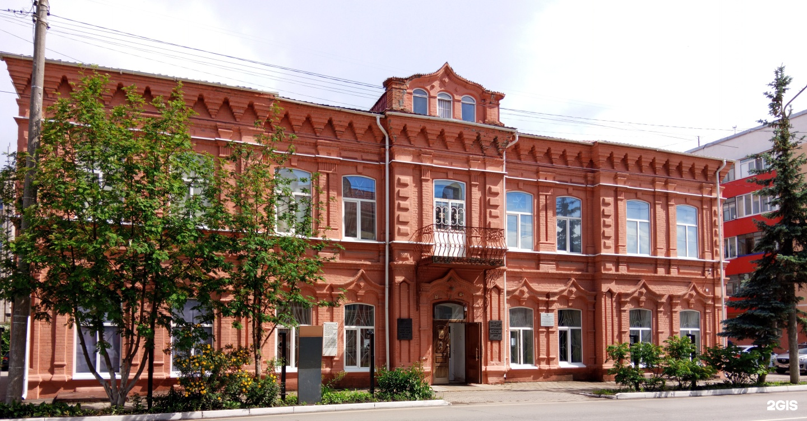
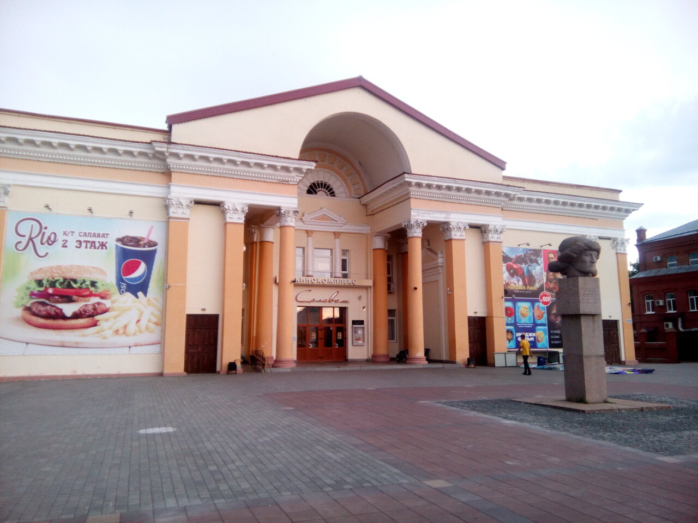
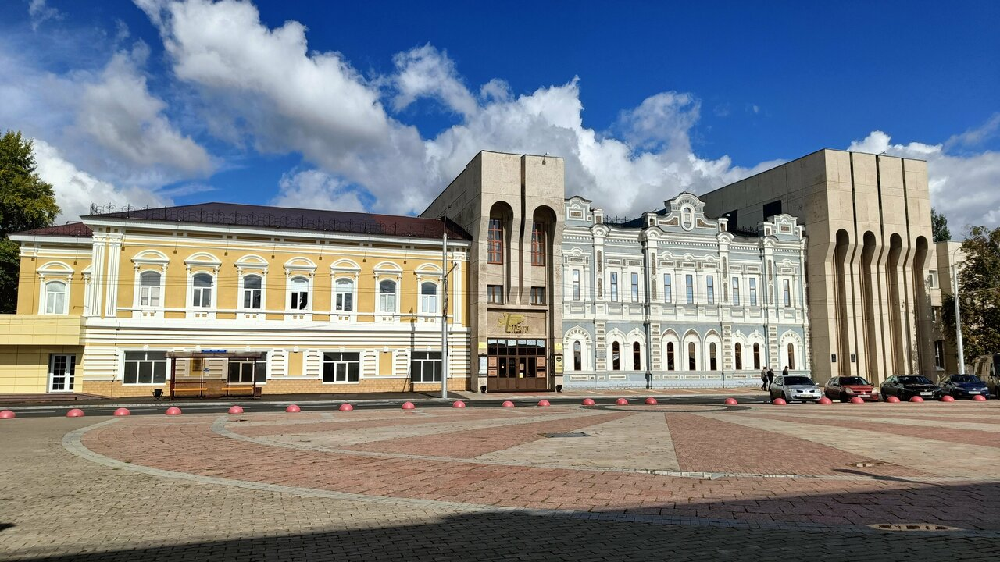

Инфоцентр:
+7 (999) 999-99-99
Уникальные шиханы, реки и старинный купеческий колорит Стерлитамака.
Окрестные горы-Шиханы — это остатки барьерных рифов древнего тропического Пермского моря, возраст которых превышает 280 миллионов лет. Они вошли в геопарк ЮНЕСКО «Торатау».

Величественная куполообразная гора-останец высотой 406 метров над уровнем моря (280 метров над уровнем реки Белой). Торатау сложен из известняков древнего тропического рифа Пермского моря, возраст которого превышает 285 миллионов лет. Для башкирского рода Юрматы гора веками почиталась как священное место силы.
Сегодня Торатау — ключевой объект геопарка ЮНЕСКО. Для защиты хрупкой экосистемы и редких краснокнижных растений здесь построена удобная пологая экотропа с лестницей и смотровыми площадками, а у подножия открыт современный визит-центр с интерактивным музеем и кафе.

Самый крупный по площади шихан (протяжённость около 4 км, высота 357 метров), название которого переводится как «двойная гора» или «птица-гора». Пологие склоны Куштау покрыты густыми реликтовыми дубравами и липовыми лесами, ставшими домом для десятков редких видов флоры и фауны.
Зимой здесь действует популярный горнолыжный комплекс с трассами разной сложности и подъёмниками. В августе 2020 года благодаря гражданскому мужеству жителей Стерлитамака шихан отстояли от промышленной разработки, после чего ему был присвоен охранный статус заказника.

Самый северный шихан высотой 338 метров, обладающий выразительной конусообразной формой («Юрактау» переводится с башкирского как «сердце-гора»). С его скалистой вершины открывается потрясающий круговой обзор на пойменные луга, изгибы реки Белой и далёкие силуэты соседних гор.
У подножия Юрактау раскинулось чистое родниковое озеро Мокша — любимое место туристов с палатками и фотографов. На карбонатных склонах горы сохранились уникальные реликтовые растения, многие из которых занесены в Красную книгу России.

Стерлитамак имеет уникальное географическое положение на слиянии четырёх рек. Могучая Белая (Агидель) — главная водная артерия Башкортостана — принимает здесь воды Ашкадара, Стерли и Ольховки. Именно эти водные пути в XVIII веке дали начало судоходству и соляному промыслу.
В наши дни городские набережные переживают масштабное возрождение. Прогулочная зона вдоль реки Стерли с пешеходными мостиками, экопарками и зонами отдыха стала визитной карточкой нового Стерлитамака, а городской пляж на Ашкадаре привлекает тысячи горожан каждое лето.

Одно из самых выразительных и монументальных дореволюционных зданий Стерлитамака, построенное в 1914 году по проекту самарского архитектора. Здание в стиле рационального модерна с элементами эклектики служило административным центром Стерлитамакского уезда, где решались ключевые вопросы развития просвещения, дорог и медицины края.
Фасад здания выделяется сложной рельефной кладкой из красного закалённого кирпича, высокими арочными окнами и массивным парадным порталом. Сегодня этот объект культурного наследия остаётся одной из главных точек архитектурных экскурсий по историческому кварталу Старого города.

Старейшее сохранившееся каменное здание Стерлитамака, возведённое в 1838 году в стиле строгого русского классицизма в память о победе над Наполеоном в Отечественной войне 1812 года. Белокаменный храм с величественной четырёхъярусной колокольней веками служил духовным оплотом православных жителей города и окрестных уездов.
В советский период собор пережил закрытие и переоборудование, но в 1940-е годы был возвращён верующим. Сегодня Никольский собор полностью отреставрирован: здесь восстановлены старинные иконостасы, благоустроена прихрамовая территория, а колокольный звон разносится над старыми кварталами города.

Изящный двухэтажный особняк в стиле купеческого модерна, построенный в 1914 году на главной купеческой улице города (Большой Заводской, ныне Карла Маркса) для размещения Сибирского купеческого банка. Здание восхищает фигурной кирпичной кладкой, коваными решётками и сохранившимися элементами дореволюционных интерьеров.
Сегодня в стенах бывшего банка работает главный музей города, основанный ещё в 1919 году. В его залах представлены богатейшие археологические находки, этнографические коллекции башкирского, русского и татарского быта, оружие эпохи Пугачёвского восстания и знаменитый 315-килограммовый Стерлитамакский метеорит.

Архитектурный гимн советскому неоклассицизму и символ послевоенного индустриального расцвета города. Здание, возведённое в 1959 году по проекту архитектора Зои Брод, встречает горожан торжественным восьмиколонным коринфским портиком, лепным фронтоном и просторной театральной площадью.
«Салават» долгие десятилетия оставался главным кинокомплексом города и культовым местом свиданий для нескольких поколений стерлитамаковцев. Несмотря на завершение эпохи традиционного кинопроката, здание признано архитектурным памятником регионального значения и готовится к перерождению в новое общественное и креативное пространство.

Ведущий центр театрального искусства юга республики, основанный сразу после окончания Великой Отечественной войны. Здание театра с классическим строгим портиком, колоннами и пилястрами формирует торжественный ансамбль Театральной площади — одного из любимых мест вечерних прогулок горожан.
На сцене театра ставятся как шедевры мировой классики, так и произведения современной драматургии, собирая полные залы зрителей не только из Стерлитамака, но и из Салавата и Ишимбая. Театр неоднократно становился лауреатом всероссийских и международных театральных фестивалей.
Люди, которые родились в городе и прославили его в науке, культуре и спорте.
Перейти к известным людям →